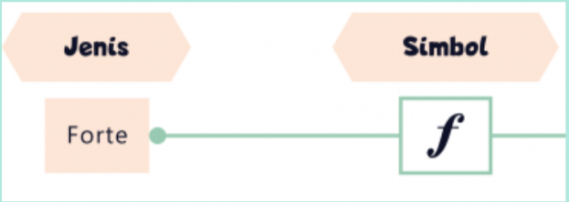

Are You Ready?
Answer the question
Tangga nada C mayor hanya menggunakan tuts berwarna apa pada piano?
Answer the question
Berapakah jarak (interval) antara nada E dan F dalam tangga nada C
mayor...
Answer the question
Urutan nada yang benar untuk tangga nada C mayor (naik satu oktaf)
adalah...
Answer the question
Jika simbol ini dipartitur maka piano di mainkan secara...
